Rheumatology Treatment
- Prednisone is fast and non-specific: good short term (acute flares, “bridging” until a DMARD works), bad long term. High dose (~1 mg/kg) only for organ- or life-threatening disease: ANCA vasculitis, lupus nephritis, myositis, GCA. PMR, gout and RA flares get medium doses.
- Aspirate every new acute monoarthritis and send only C3G: cell count, crystals, culture and Gram stain (glucose is useless). Never inject steroid into a joint that might be septic; wait for a negative culture.
- NSAIDs treat symptoms but are not disease-modifying in RA. Side effects: heart (HTN, MI, stroke), gut (gastritis, ulcer; least with celecoxib), kidney. Acetaminophen is analgesic only, max 3 g/day (2 g in cirrhosis). Opioids have almost no role.
- RA: treat early (within 3 months), aggressively, to target (remission). Triple therapy beats one drug. DMARDs take 6–12 weeks. The GHMI toxicities (GI, hepatic, myelosuppression, infection) and the one-liners: hydroxychloroquine = eyes (bull's eye, yearly exam, no bloods, safe in pregnancy); methotrexate = weekly, folic acid, teratogenic, pneumonitis; leflunomide = hypertension, teratogenic; sulfasalazine = sulfa allergy, G6PD, oligospermia.
- Biologics hit one target (TNF, IL-6, T cells, B cells), cost $10–20k/year, and come after failed DMARDs. No TNF inhibitor with active or recurrent infection, class III/IV heart failure, active cancer, or MS (or a family history of MS). Stop it with fever, infection, antibiotics or surgery.
Learning Objectives
- Propose a treatment plan for inflammatory and rheumatologic conditions.
- Describe the role of steroids (systemic and intra-articular) and list the side effects of chronic steroid use.
- List the contraindications for MSK injections and what informed consent needs.
- Explain the use and side effects of acetaminophen and NSAIDs, and the limited role of opioids.
- Outline treatment with DMARDs and their important toxicities.
- Distinguish biologics from DMARDs and explain their role.
A 90-minute self-study module by Dr. Tristan Boyd (rheumatology): five slide decks with knowledge-check questions and no recordings. Slides marked “Remember this slide” in the decks are flagged ★ below. The objectives also list adult vs children's treatment, which the decks don't cover; see 11.4 JIA for the children's ladder.
Steroids
Prednisone: one drug, many doses, many side effects.
How Prednisone Works and When
| Anti-inflammatory actions (all non-specific) | Clinical effect |
|---|---|
| Binds transcription factors → blocks pro-inflammatory proteins ↓ neutrophil migration Directly inhibits cytokines (IL-1, IL-6, TNF-α) ↓ prostaglandins and leukotrienes | ↓ pain, ↓ swelling, ↓ stiffness, ↓ disability. Most useful in the ACUTE setting because it works rapidly. |
The adrenals make the equivalent of ~7 mg prednisone a day.
★ Dose Depends on the Condition
| Dose | Conditions | Regimen |
|---|---|---|
| High (~1 mg/kg) organ- or life-threatening | 1. ANCA-associated vasculitis 2. Lupus nephritis 3. Inflammatory myositis (polymyositis, dermatomyositis) 4. Giant cell arteritis | ~1 mg/kg ideal body weight. In an emergency, pulse IV methylprednisolone 1 g daily × 3 days to jumpstart, then high-dose oral. |
| Medium flares without major organ involvement | RA flare | 20–40 mg daily, taper as the DMARD (steroid-sparing therapy) starts |
| Polymyalgia rheumatica | 15–20 mg daily, taper to 10 mg, then −1 mg every 4 weeks until off (details in 12.5) | |
| Acute gout | 25–30 mg daily × 3 days, then taper by 5 mg every 3 days until off. Self-limited; doesn't need high dose. | |
| Low (≤ 5 mg) | Chronic disease where steroids can't be stopped or steroid-sparers aren't tolerated | Long term |
The module's question: which is not treated with high-dose steroid? GPA with hemoptysis and hematuria (yes), dermatomyositis with dysphagia (yes: the upper two-thirds of the esophagus is skeletal muscle), class III lupus nephritis (yes; milder lupus doesn't always need it), GCA with amaurosis fugax (yes, often pulsed) → PMR gets medium dose (e.g., 20 mg). But PMR with GCA (~15%) needs high dose to prevent blindness.
Which Route?
| Route | Use |
|---|---|
| Oral (PO) | Easy to taper or stop because the dose can change |
| Intramuscular (IM) | Lasts 3–4 weeks; consider with non-adherence |
| Intravenous (IV) | Rapid effect before switching to high-dose oral (e.g., GCA with vision involvement) |
| Intra-articular (“cortisone injection”) | Few joints swollen or a weight-bearing joint. Fewer systemic effects because the steroid stays in the joint. Inflammatory arthritis, OA, rotator cuff tendinitis. |
75-year-old, hot first MTP, intracellular urate crystals, culture negative. End-stage renal disease, heart failure on diuretics, poorly controlled diabetes. Best: intra-articular steroid (minimal absorption). Oral prednisone worsens CHF and diabetes; NSAIDs are out with ESRD.
★ Side Effects of Chronic Prednisone
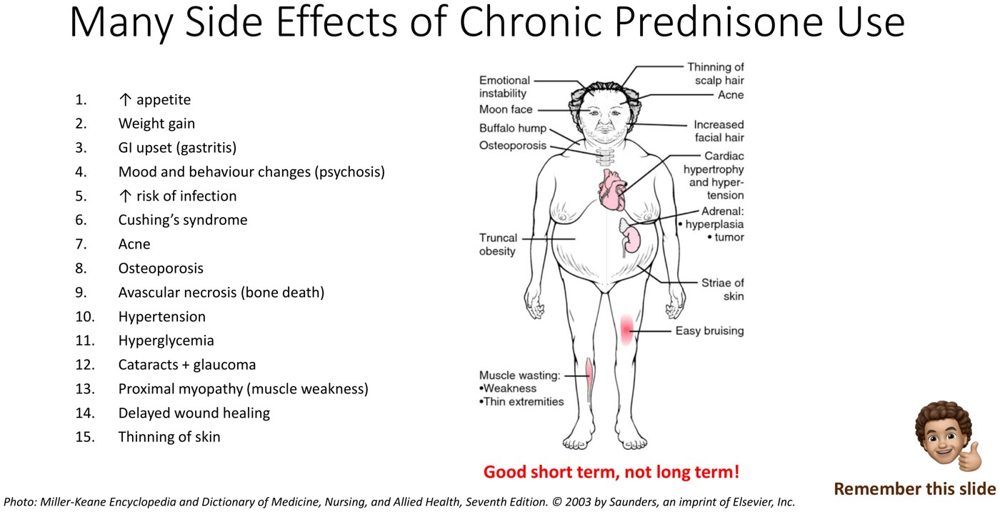
| System | Side effects |
|---|---|
| Metabolic | ↑ appetite, weight gain, Cushing's syndrome, hyperglycemia, hypertension |
| Bone and muscle | Osteoporosis, avascular necrosis, proximal myopathy |
| Eye | Cataracts and glaucoma |
| Skin | Acne, thinning skin, delayed wound healing |
| Other | GI upset (gastritis), mood and behaviour change (psychosis), ↑ infection |
Relative contraindications (choose a steroid-sparer instead): diabetes, cardiovascular disease, osteoporosis, recurrent infections, glaucoma/cataracts. Steroid-sparing drugs = the DMARDs (Part 4).
Joint Aspiration and Injection
Two benefits: diagnostic and therapeutic.
★ Informed Consent: the Complications
Every procedure needs consent: benefits, complications, and a competent patient (or substitute decision-maker).
| Complication | From |
|---|---|
| Infection (septic joint): very low risk | The needle |
| Small risk of bleeding (intra- or periarticular) | The needle |
| Very small risk of tendon rupture (why landmarking matters) | The needle |
| Fat atrophy or skin depigmentation (usually if injected too superficially) | The steroid |
| Minimal systemic absorption (worse diabetic control, hypertension) | The steroid |
| Post-injection flare: uncommon, resolves on its own | The steroid |
Consent for a plain aspiration: infection, bleeding, tendon rupture. Post-injection flare and steroid absorption belong to steroid injection, not to aspiration (the module's question).
Diagnostic Arthrocentesis: C3G
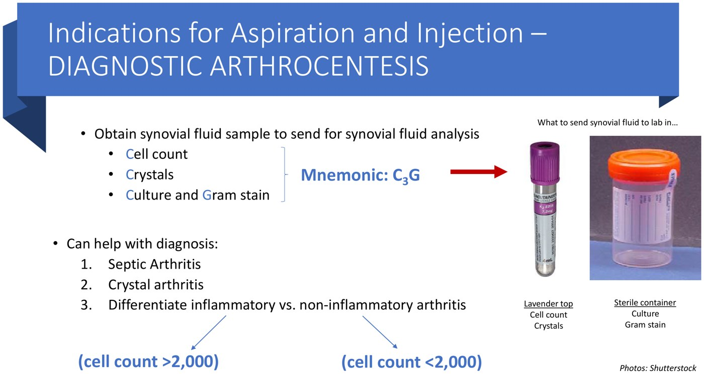
C3G and the two containers. From the deck.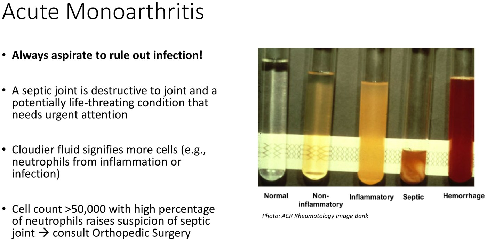
Cloudier fluid = more cells. From the deck.| Container | Test | Answers |
|---|---|---|
| Lavender top | Cell count (with differential) | > 2,000 = inflammatory; < 2,000 = non-inflammatory (OA). > 50,000 with mostly neutrophils → suspect septic joint, consult orthopedics. |
| Crystals (light/polarized microscopy) | Urate (gout) or calcium pyrophosphate (pseudogout) | |
| Sterile container | Culture and Gram stain | Septic arthritis |
Always aspirate the first presentation of acute monoarthritis to rule out infection. Send only these three things; synovial glucose has no diagnostic use.
Therapeutic Arthrocentesis and ★ Injection Contraindications
Therapeutic: remove fluid to ease pain and swelling; inject steroid (e.g., triamcinolone: local control of synovitis, OA pain) or hyaluronic acid (OA pain).
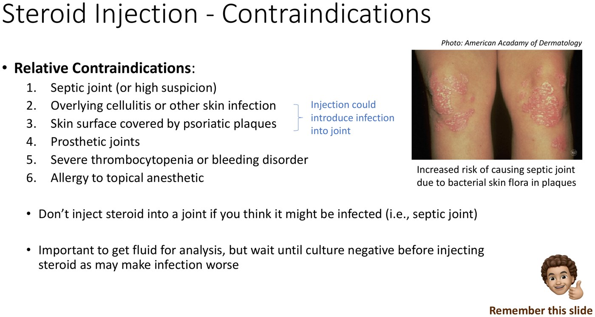
| Relative contraindication | Why |
|---|---|
| 1. Septic joint (or high suspicion) | Steroid makes infection worse: tap, then wait until the culture is negative before injecting |
| 2. Overlying cellulitis or skin infection | The needle carries bacteria into the joint (psoriatic plaques are full of skin flora) |
| 3. Skin covered by psoriatic plaques | |
| 4. Prosthetic joint | Infection risk |
| 5. Severe thrombocytopenia or bleeding disorder | Bleeding |
| 6. Allergy to the topical anesthetic |
NSAIDs, Acetaminophen and Opioids
Symptom control, not disease control.
NSAIDs
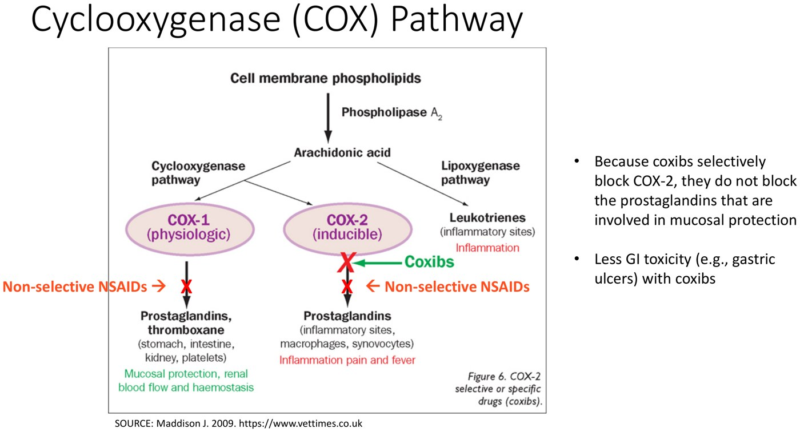
| Type | Drug and usual dose |
|---|---|
| Non-selective: reversibly inhibit COX-1 and COX-2 | Ibuprofen 600–800 mg TID |
| Naproxen 500 mg BID | |
| Meloxicam 15 mg daily | |
| Diclofenac 75 mg BID | |
| Indomethacin 50 mg TID | |
| COX-2 selective | Celecoxib 200 mg daily |
Efficacy is similar across NSAIDs; some patients respond better to one, so try another. Indications: OA, RA, psoriatic arthritis, ankylosing spondylitis, acute gout, CPPD.
They help pain and swelling in new RA or a flare, but they don't prevent disease activity and don't delay erosions.
★ NSAID Side Effects
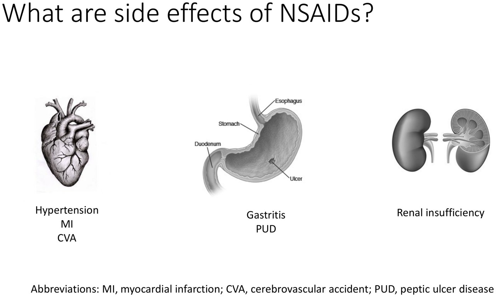
| Organ | Risk |
|---|---|
| Heart / vessels | Hypertension, MI, stroke |
| Gut | Gastritis, peptic ulcer (less with celecoxib, but still possible: add a PPI if risky) |
| Kidney | Renal insufficiency (avoid in ESRD) |
| Interactions / pregnancy | Other anticoagulants; 3rd trimester: premature closure of the ductus arteriosus |
Risk is similar for all NSAIDs except less GI toxicity with celecoxib. Screening bloods: CBC, ALT, creatinine.
Acetaminophen and Opioids
| Acetaminophen | Opioids | |
|---|---|---|
| Action | Analgesic, not anti-inflammatory | Analgesic |
| Use | OA, mechanical back pain, regional pain syndromes | Hardly ever in rheumatology: the goal is to treat inflammation, which relieves pain. Maybe chronic pain, but other options are preferred (opioid crisis, misuse). |
| Dose | Up to 3 g/day divided (2 Extra Strength TID); max 2 g/day in cirrhosis | |
| Side effects | Minimal: no gastritis, constipation, blood pressure or cognitive effects | Impaired cognition, constipation, dependence and withdrawal |
65-year-old with gastritis and hand OA, failed OT, topical NSAID, acetaminophen and glucosamine. NSAID with the least GI toxicity? Celecoxib (COX-2 selective), still with caution ± a PPI.
Disease-Modifying Drugs (DMARDs)
The steroid-sparers that actually change the course of RA.
★ The Approach to Treating RA
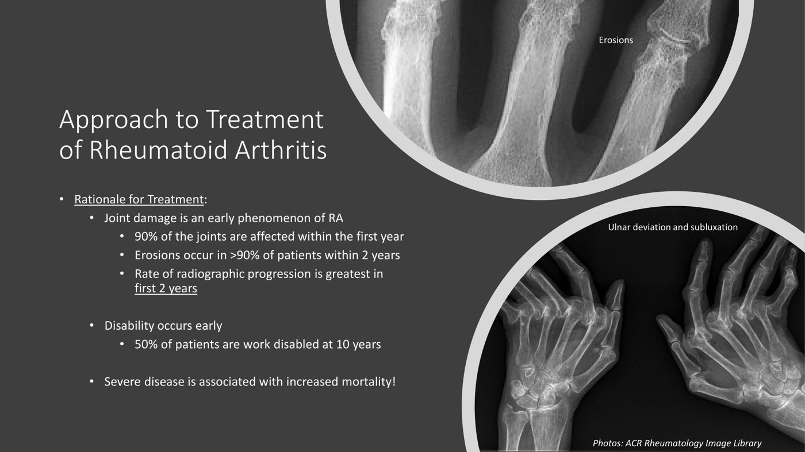
| Why hurry | How |
|---|---|
| 90% of the joints affected are involved within the first year Erosions in > 90% within 2 years; progression fastest in the first 2 years 50% work-disabled at 10 years Severe disease raises mortality | “Window of opportunity”: treat before any erosions. 1. Treat early: DMARDs/biologics within 3 months of symptom onset 2. Treat aggressively: triple therapy beats one agent in early RA 3. Treat appropriately: treat to target, goal = remission (no swollen or tender joints); adjust every 3–6 months if not there |
Methotrexate + sulfasalazine + hydroxychloroquine; optimize dose and route. Prednisone bridges while they kick in.
Switch methotrexate PO → SC (better bioavailability); add leflunomide.
Add a biologic (Part 5).
Starting any DMARD: discuss common and severe side effects; check interactions and contraindications; baseline bloods (incl. hepatitis B and C); give a blood-work form, because most need monthly bloods. Other DMARDs: gold, azathioprine, cyclosporine, cyclophosphamide.
The Four DMARDs Side by Side
Mnemonic for the shared toxicities: GHMI = GI upset, Hepatotoxicity, Myelosuppression, Infection. You don't need the mechanisms.
| Methotrexate | Hydroxychloroquine (Plaquenil) | Sulfasalazine | Leflunomide (Arava) | |
|---|---|---|---|---|
| Dose | 20–25 mg PO or SC once WEEKLY | 200–400 mg PO daily (6.5 mg/kg/day ideal body weight) | 500–1,000 mg/day, ↑ weekly to 2 g/day divided (max 3 g) | 10–20 mg PO daily (load 100 mg × 3 days, optional) |
| Onset | 6–8 weeks | 6–12 weeks | 6–8 weeks | 6–8 weeks |
| GHMI | All four | GI only; no myelosuppression | All four (aplastic anemia) | All four (leukopenia) |
| Signature toxicity | Oral ulcers, acute pneumonitis (dry cough, SOB, fever), fatigue, alopecia | Retinal toxicity (~1/5,000; bull's eye maculopathy), ↓ accommodation, rash, photosensitivity, headache | Headache (33%), rash/photosensitivity, reversible oligospermia (33%) | Hypertension, peripheral neuropathy, alopecia (10–15%), weight loss, pneumonitis (less than MTX) |
| Pregnancy | Teratogenic | Safe | Safe | Teratogenic (cholestyramine washout 8 g TID × 11 days) |
| Monitoring | Baseline incl. hep B/C ± CXR; monthly CBC-diff, ALT, creatinine, ESR/CRP | No bloods; baseline + yearly eye exam (acuity, colour vision, fields) | Baseline incl. hep B/C; monthly CBC-diff, ALT, creatinine, ESR/CRP | Baseline CBC, transaminases, hep B/C, BP; monthly bloods as MTX |
| Notes | Folic acid 5 mg weekly cuts side effects; avoid alcohol; avoid sulfa antibiotics (cytopenias; sulfasalazine is fine); dose by eGFR | Also the anchor drug in lupus (11.8) | Screen G6PD; don't use with sulfa allergy | Avoid alcohol |
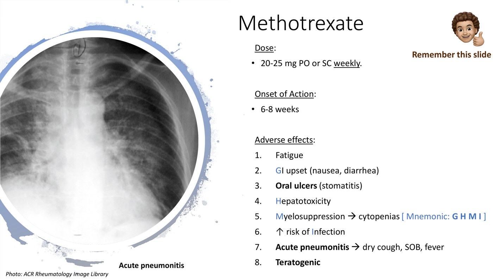
Methotrexate and its pneumonitis. From the deck.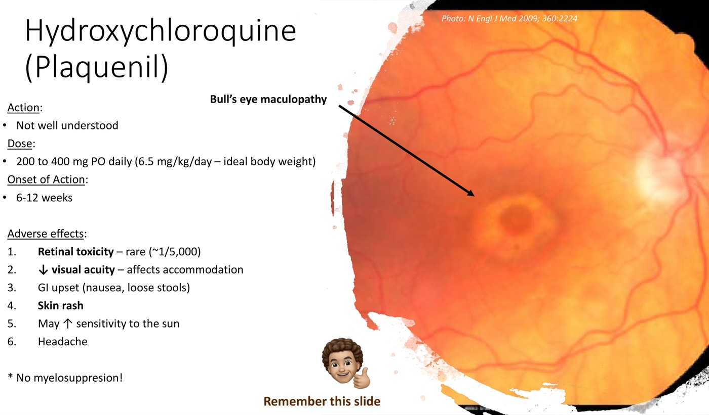
Hydroxychloroquine: bull's eye maculopathy. From the deck.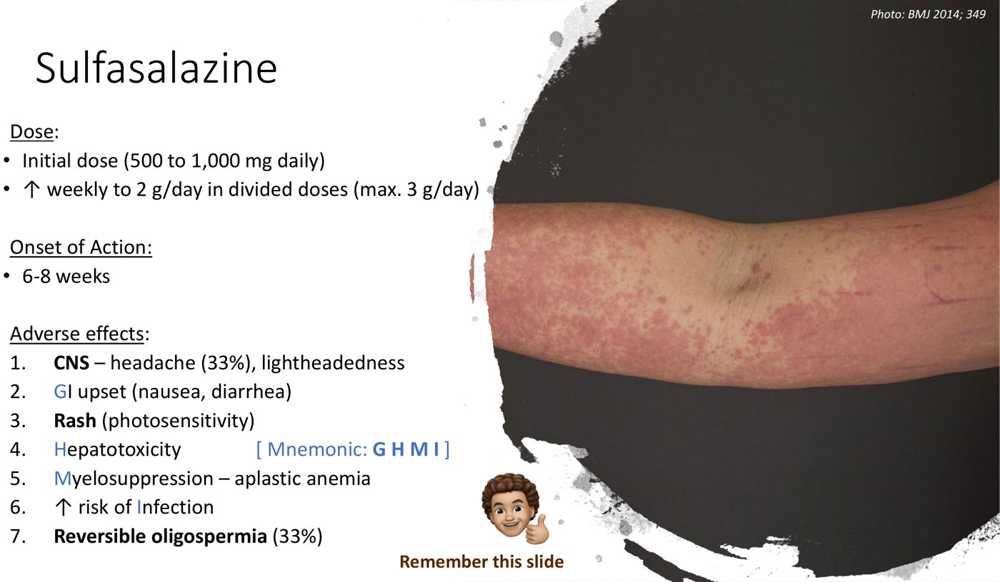
Sulfasalazine: drug rash. From the deck.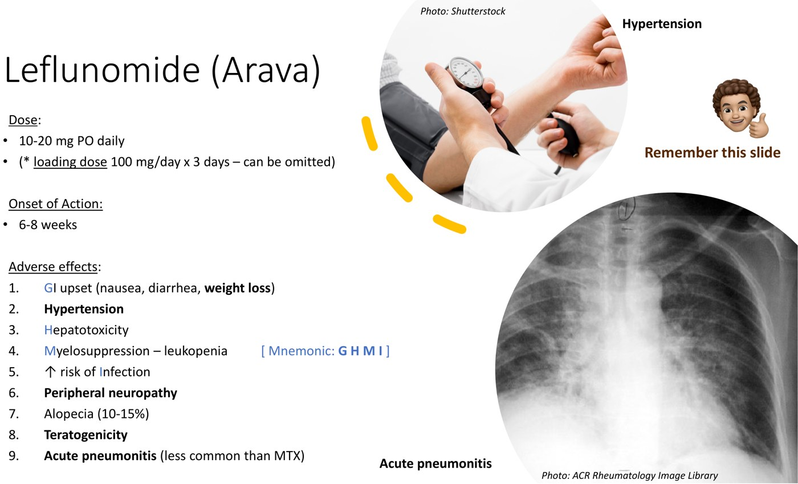
Leflunomide: hypertension and pneumonitis. From the deck.| Quick quiz from the deck | Answer |
|---|---|
| Which DMARD needs a yearly eye exam? | Hydroxychloroquine |
| Which DMARD causes hypertension? | Leflunomide |
| Which DMARDs cause lung toxicity? | Methotrexate and leflunomide |
| Which biologic can worsen CHF? | Any TNF inhibitor (not with class III/IV heart failure) |
| Psoriatic arthritis on sulfasalazine, itchy urticarial rash: which is not a sulfasalazine side effect? | Acute pneumonitis (methotrexate, less often leflunomide). The rash is a drug rash: avoid sulfa drugs in future. |
Biologics
Targeted, expensive, and powerful enough to make RA remission possible.
★ What Makes a Biologic Different
| DMARDs | Biologics | |
|---|---|---|
| Goal | Suppress inflammation and prevent joint damage (both disease-modifying) | |
| Mechanism | Non-specific | Specific molecule or cell: TNF-α, IL-1, IL-6, T cells, B cells |
| Cost | Cheap | ~$10,000–20,000/year: need drug coverage, so usually after failed DMARDs |
Newer: small molecules (JAK-STAT inhibitors, e.g., tofacitinib) and biosimilars (copies made after a biologic's patent expires).
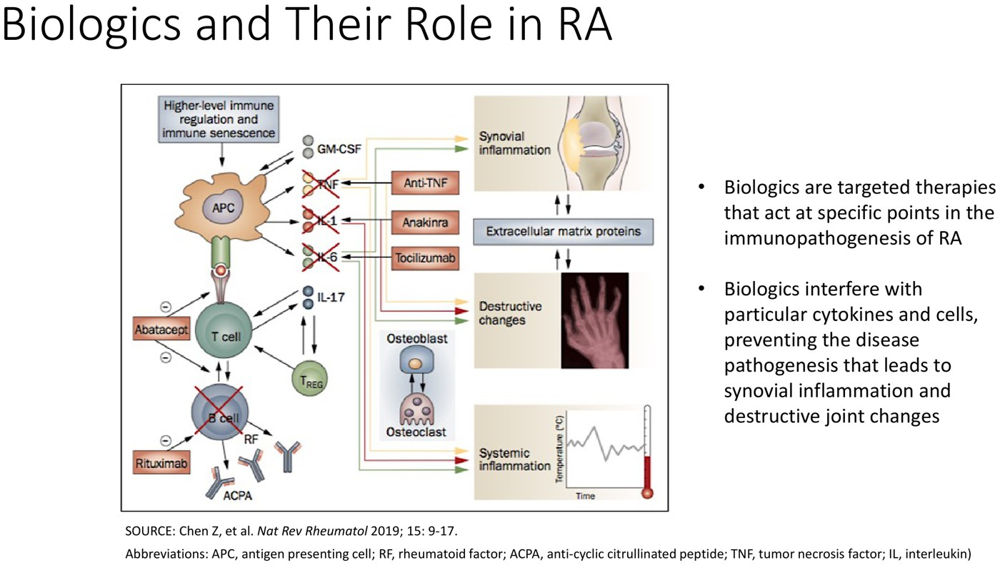
Where each biologic acts (Chen et al., Nat Rev Rheumatol 2019). From the deck.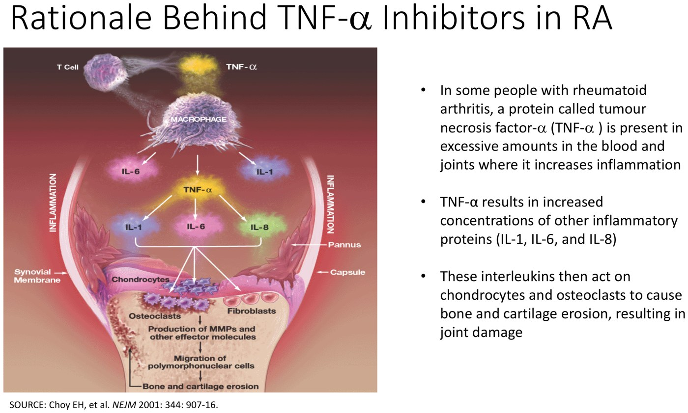
Why block TNF-α: it drives IL-1, IL-6 and IL-8, which erode cartilage and bone. From the deck.| Class (RA) | Examples (names not needed) | How given |
|---|---|---|
| TNF inhibitors | Monoclonal antibodies (“-mab”): infliximab, adalimumab, golimumab, certolizumab; decoy receptor: etanercept | Infliximab IV; the other four SC. Onset 2 weeks–3 months. |
| IL-6 inhibitor | Tocilizumab | |
| T-cell co-stimulation blockade | Abatacept | |
| B-cell depletion | Rituximab |
★ TNF Inhibitors: Adverse Effects and Contraindications
| Adverse effects | Contraindications (don't use) |
|---|---|
| 1. Injection-site (or infliximab infusion) reactions 2. ↑ infection, incl. TB and opportunistic 3. Demyelinating disease (MS) 4. Worsens CHF 5. Slight ↑ malignancy: skin cancer (< 1%), possibly lymphoma 6. Drug-induced lupus (malar rash) | 1. Active infection (e.g., sepsis) 2. Recent or recurrent infection (recurrent UTI, pneumonia) 3. CHF class III/IV 4. Active malignancy 5. Multiple sclerosis (or a family history) |
Hold the TNF inhibitor with a fever, an infection, a course of antibiotics, and before surgery (delays wound healing).
Coronary artery disease is not a contraindication (only advanced CHF is). A 24-year-old with RA, failed sulfasalazine and hydroxychloroquine, wants pregnancy soon (so no methotrexate or leflunomide), family history of MS → avoid TNF inhibitors. Other classes don't cause demyelination; pregnancy data on newer biologics are limited.
Practice Patients
1. A 32-year-old with new lupus: malar rash, oral ulcers, pleurisy, synovitis, anti-dsDNA, low complement. Starting prednisone and hydroxychloroquine. Which is NOT a prednisone side effect: weight gain, psychosis, ↓ infection risk, AVN, cataracts?
Answer
↓ risk of infection: prednisone raises infection risk. Every other option is real.
2. A resident sends ankle fluid for cell count, crystals, culture, Gram stain and glucose. Which is unhelpful?
Answer
Glucose. C3G only. Cell count > 2,000 = inflammatory; > 50,000 neutrophil-rich = think septic.
3. A 45-year-old on hydroxychloroquine 400 mg for 20 years, no recent eye exam. What retinal finding worries you?
Answer
Bull's eye maculopathy. Warn at the start; yearly eye exams.
4. A man with RA on methotrexate develops dry cough, shortness of breath and fever. He was also started on trimethoprim-sulfamethoxazole for a UTI last week and his counts are falling.
Answer
Think methotrexate pneumonitis (stop it, assess urgently), and the sulfa antibiotic worsens methotrexate cytopenias. Methotrexate + sulfa antibiotics = avoid; methotrexate + sulfasalazine is fine.
5. A patient on adalimumab calls with a fever of 38.5°C and a cough.
Answer
Hold the TNF inhibitor and assess for infection (including TB and opportunistic organisms). Restart once the infection has been treated.
Built from Dr. Tristan Boyd's five decks (Steroids, Intra-articular Injections, NSAIDs and Acetaminophen, Disease Modifying Drugs, Biologics) and the module's knowledge-check questions. There are no recordings. Face photos (lupus malar rash, temporal artery, heliotrope rash, saddle nose, drug-induced lupus) are left out. Notes: the dose slide says PMR prednisone 15–20 mg × 4 weeks, the PMR slide in the same deck says × 2 weeks then “10 mg weekly” (Dr. Anwar's taper in 12.5 holds 1–2 months); gout prednisone is 25–30 mg on one slide and 25 mg on another. Patient 4's sulfa-antibiotic twist combines two deck facts and is not a module case.